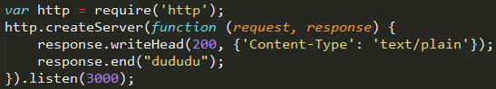
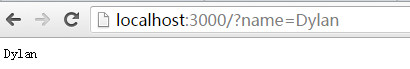
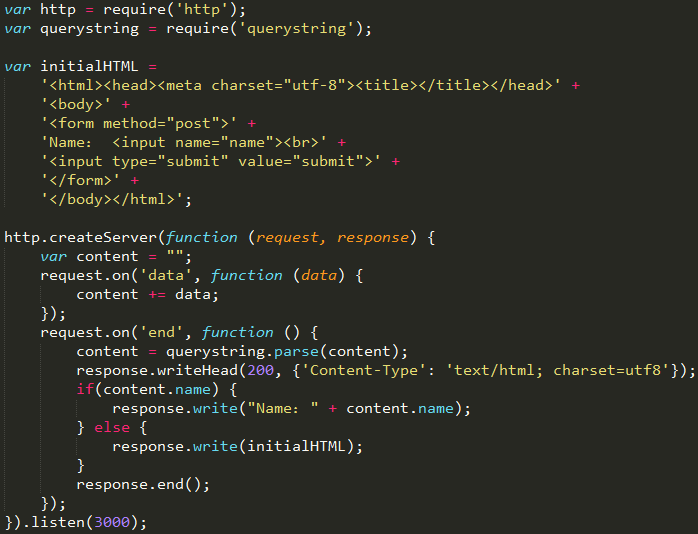
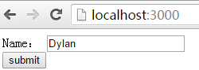
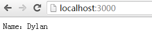

This blog will explain how to create a nodejs server, discuss the "Get" and "Post" requests simplicity. As we all know, the difference between "Get" and "Post" is that "Get" put the parameters in the URL, but "Post" has a request body. Therefore the most important thing is to get the content.

2. Create a "Get" request server
As for getting the query information in url, we should use "url" package and its "parse", "query" methods. After that, we can use the method similar to fetching properties to get the values.


3. Create a "Post" request server
Because the "post" request doesn't have url parameters, we have to find another solution to get the query body —— "querystring" package. The function of this package is to turn a query body into an accessible object.



(That's all)